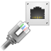

2 Unit Setup¶
To setup a protected stream using two DVGs you will need to connect them to the internet or the simulated internet test bench. One DVG will be used as the as the sender/protector and the other will be used as the receiver/sentinel.
To connect the DVG instances to the test setup:
On the sender side, connect an RJ-45 cable from the source of the stream to physical port #1.
On the sender side, connect an RJ-45 cable from physical port #2 to the router.
On the sender side, connect an RJ-45 cable from from the physical port Mgmt to the management switch.
On the receiver side, connect an RJ-45 cable from physical port #1 to the decoder.
On the receiver side, connect an RJ-45 cable from physical port #2 to the router.
On the receiver side, connect an RJ-45 cable from from the physical port Mgmt to the management switch.
Connect an RJ-45 cable from the management switch to the management PC.
The following diagram shows how to connect the physical interfaces to the routers or the internet test bench.
2.1 Port Configuration¶
After the devices have been connected physically, the ports will need to be configured.
2.1.1 Configuring the Management Port¶
The management port is used to access the management user interface.
Procedure
Access the DVG through the default address http://<ip_address>.
Log in to the device using the userid/pass admin/admin.
Click the edit private menu.
Click the Configuration tab.
In the configuration tree, navigate to System > Management > Management_IP.
Click on the Set-If leaf.
In the Ip Address field, enter a management IP address.
In the subnet mask field, enter a subnet mask or leave the default.
In the Gateway field, enter a gateway address. (optional)
Click Perform to save the address.
The machine will need to be rebooted for the address to be saved.
Repeat the above procedure on the second DVG unit..
2.1.2 Configuring Data Ports¶
The DVG units will connect to the internet and to either an encoder or a decoder using the physical interfaces of the unit. Physical interfaces are configured using the quick configure icons. Configure the interfaces on both DVG units using the procedures in this section.
Procedure
Click the  icon to open the Add/Edit Ethernet Port configuration window.
{kind=link}
{kind=link}
In the Port Number pane, select a port number.
Note
Each port number corresponds to a physical interface. Port numbers that is greater than the number of physical interfaces on the unit cannot be added.
In the Port Name pane, enter a name for the port.
in the IP Address field, enter an IP address.
In the Subnet Mask pane, enter a subnet mask.
In the Default Gateway pane, enter a default gateway (optional).
In the Gateway Priority pane, select a value from the drop-down list.
Click Send to save the configuration.
Repeat this procedure for all the required interfaces.